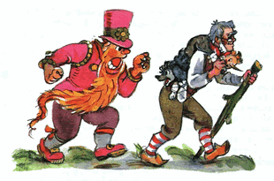
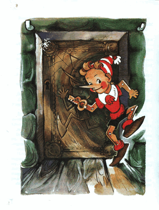

Kedatangan Carlo yang secara tiba-tiba, membawa tongkat dan mengkerutkan dahi, membuat berengsek-berengsek itu gentar.
Si rubah Alisa merayap ke rerumputan gondrong dan kabur. Sesekali terhenti untuk merintih sakit karena dipukul tongkat.
Si kucing Basilio terlempar sepuluh langkah, mendesis berang seperti ban sepeda bocor.
Duremar meraih mantel hijaunya yang terjatuh lalu memanjat-turun dari puncak, berkata berulang-ulang:
- Saya tidak ikut-ikutan, saya tidak ikut-ikutan...
Tapi di lerengan paling curam itu dia terpeleset, berguling-guling dan dengan suara yang dahsyat dia jatuh tercebur ke rawa keruh.
Karabas Barabas masih berdiri di tempat dia berdiri, dia hanya mendongakkan kepalanya ke pangkal bahu; jenggotnya tergantung, seperti derek.
Buratino, Pierrot, dan Malavina memanjat naik, papa Carlo mengangkat mereka satu persatu ke lengannya, dia menggerak-gerakan telunjuk:
- Kutemukan kalian, dasar nakal..!
Lalu memasukkan mereka ke dalam baju.
Kemudian dia turun beberapa langkah ke lerengan lalu membungkuk di atas anjing yang malang itu. Artemon si anjing setia itu mengangkat moncongnya dan menjilat-jilat hidung Carlo. Kemudian kepala Buratino menyembul keluar dari kerah baju dia.
- papa Carlo, kita tidak akan pulang tanpa anjing itu.
- Eh eh eh, /Carlo menjawab/ bakal repot nih, tapi ya sudah, kubawa anjing liar kalian.
Dia menggotong Artemon di pundaknya dan, terengah-engah mengangkut beban, dia memanjat naik, ke tempat di mana; Karabas Barabas masih berdiri, kepala menengadah, matanya melotot.
- Boneka punyaku... /dia menggerutu/
papa Carlo menjawabnya dengan tegas:
- Oh jadi kau!? Orang berusia dewasa yang bergaul dengan mereka yang terkenal di seluruh dunia sebagai penipu? dengan Duremar? si kucing? si rubah? melecehkan anak kecil!? Malu dong, Doktor!
Kemudian Carlo berlalu di sepanjang jalan menuju kota
Karabas Barabas mengikutinya berjalan, kepalanya menengadah.
- Boneka punyaku, kembalikan!..
- Apanya yang dikembalikan!? /teriak si Buratino nongol di leher/
Berjalan dan terus berjalan. Melewati kedai "Tiga Impun", di ambang pintu si master botak tengah membungkuk, mempersembahkan dengan kedua tangannya ke arah penggorengan yang mendecis.
Di dekat pintu; bolak, balik, bolak, balik, si ayam jago mondar-mandir dengan ekornya yang kusut; dengan jengkel menceritakan kepada ayam-ayam betinanya tentang perundungan yang dilakukan Buratino. Ayam-ayam betina itu mengasihani:
- Ah ah ah, mengerikan sekali!.. Uh uh... Jagoan kami!..
Carlo sampai di atas bukit, di mana pesisir laut dapat terlihat; di sana-sini angin berhembus bergaris-garis, di sekitaran pantai, terlihat kota tua berpulas pasir di bawah terik matahari, dan juga tenda linen teater boneka.
Karabas Barabas, berdiri tiga langkah di belakang Carlo, ngomel-ngomel:
- Kuberi kau seratus koin emas untuk boneka-boneka itu, sini jual.
Buratino, Malavina, dan Pierrot menahan nafas, menunggu jawaban Carlo.
Dia menjawab:
- Tidak! Kalau saja kau orang yang penyayang, sutradara teater yang baik, kuberikan makhluk-makhluk kecil ini padamu. Tapi kau, kau ini lebih buaya dari buaya darat manapun! jangan harap, takkan kujual, enyah kau.
Carlo menghilir menuruni bukit, tidak lagi meladeni Karabas Barabas, berjalan masuk ke kota.
Sesampainya di sana, di tengah alun-alun, seorang polisi duduk tak bergerak.
Kepanasan dan kebosanan, kumisnya terkulai, kelopak matanya tertutup rapat, lalat-lalat berputar-putar di atas topinya yang berbentuk segitiga.
Karabas Barabas tiba-tiba memasukkan jenggotnya ke dalam saku, menarik baju Carlo dari belakang, lalu berteriak ke sekeliling alun-alun:
- Maling... maling... dia mencuri boneka punyaku!
Tetapi pak polisi, yang kepanasan dan kebosanan itu, tidak tergerak sedikitpun. Karabas Barabas melompat padanya, menuntut untuk menangkap Carlo.
- Kau ini siapa? /tanya Polisi itu dengan malas/
- Aku Doktor ilmuan boneka, sutradara teater terkenal, penyandang gelar tertinggi, teman terdekat king Tarabar; signor Karabas Barabas...
- Tak usah meraung-raung di depan wajahku... /jawab polisi itu/
Sementara Karabas Barabas sibuk dengan urusannya, papa Carlo tergesa-gesa berjalan menutuk-nutuk tongkatnya di jalan batu, sampai di suatu rumah, di mana dia tinggal. Membuka kunci pintu masuk ke dalam pondok gelap di kolong tangga, menurunkan Artemon dari pundaknya, membaringkannya di atas ranjang, mengeluarkan Buratino, Malavina, dan Pierrot dari bajunya dan mendudukkan mereka berdempetan di atas kursi.
Malavina langsung berkata:
- Papa Carlo, silahkan tangani anjing itu terlebih dahulu. Boys... langsung cuci tangan kalian.
Tiba-tiba ia mengangkat tangannya tersentak:
- Gaun-gaunku! Sepatu baruku, dan pita-pita cantikku, tertinggal di bawah lereng, di tumpukan daun burdock!..
- Tidak apa-apa, tidak usah panik, /Carlo berkata/ nanti malam aku akan pergi, ku ambil bungkusan-bungkusanmu.
Dia dengan hati-hati melepaskan perban di kaki Artemon. Ternyata lukanya sudah hampir pulih, anjing itu tidak mampu bergerak hanya karena dia kelaparan.
- Sepiring bubur gandum dan tulang berisi otak /erang Artemon/ maka aku siap untuk bertarung dengan semua anjing di kota ini.
- Ay ay ay... /Carlo mengasihani/ sayangnya di rumahku ini, cemilan pun tidak ada, dan di dompetku, satu keping soldi pun tidak punya.
Malavina terisak-isak mengasihani. Pierrot menggosok-gosok dahi dengan tinjunya, berpikir keras.
- Aku akan pergi ke jalan membacakan puisi, para pejalan kaki akan menyaweriku setumpuk soldi.
Carlo menggelengkan kepala:
- Dan kau akan menghabiskan malam, nak, untuk menggembel di kantor polisi.
Mereka semua putus asa, kecuali Buratino. Dia cengar-cengir sendiri, lalu merosot ke belakang, seolah duduk, tapi kakinya di atas.
- Hei semuanya.. berhenti mengeluh. /Dia melompat ke lantai lalu mengeluarkan sesuatu dari sakunya/ papa Carlo, ambil palu, copot kanvas bolong-bolong ini dari dinding.
Dia menunjuk dengan batang hidungnya ke perapian, ke arah ketel yang mendidih di atas api, yang uap mengepul di atasnya, yang terlukis di selembar kanvas usang.
Carlo terkejut:
- Mengapa, nak, kenapa kau ingin mencopot lukisan indah itu dari dinding? Di musim dingin, aku memandangnya sambil membayangkan bahwa itu adalah api sungguhan, dan di dalam panci itu ada rebusan daging kambing sungguhan dengan bawang bombay sungguhan, dan itu membuatku merasa sedikit hangat.
- papa Carlo, kukatakan padamu sumpah seorang boneka. Engkau akan mendapatkan api sungguhan di dalam perapian, panci-besi sungguhan, dan sup-hangat sungguhan. Copot kanvasnya.
Buratino berbicara dengan sangat percaya diri, sehingga papa Carlo menggaruk-garuk kepalanya, menggeleng-geleng, berdecak-decak. Dia mengambil tang, palu, dan mulai mencopot kanvas itu. Di balik kanvas itu, seperti yang sudah kita ketahui, semuanya dipenuhi jaring laba-laba dan bangkai-bangkai laba-laba bergelantungan.
Carlo dengan hati-hati menyapu jaring-jaring laba-laba itu. Lantas, tampaklah sebuah pintu kecil dari kayu ek yang dipernis. Di keempat sudutnya terukir wajah-wajah tertawa, dan di tengah-tengahnya, manusia kecil berhidung panjang sedang berjoget.
Setelah debu-debu di situ dibersihkan, Malavina, Pierrot, papa Carlo, dan bahkan Artemon yang lapar, berseru dalam satu suara:
- Itu potret dirimu, Buratino!
- Ah iya juga, /kata Buratino, yang tidak pernah menduga hal itu dan dirinya sendiri terkejut/ dan ini dia kunci pintunya, papa Carlo, Bukalah...
- Pintu ini dan kunci emas ini, /kata Carlo/ sejak dahulu sekali, dibuat oleh beberapa pengrajin ternama. Mari kita lihat, apa yang tersembunyi di balik pintu ini.
Dia tancapkan kunci itu ke lubangnya dan putar...
Sayup-sayup terdengar musik mengalun, seakan-akan seorang pemain organ sedang memutar kotak musiknya...
Papa Carlo mendorong pintu itu. "Cekrek", pintu itu terbuka.
Tak lama kemudian, derap langkah terdengar dari luar jendela dan terdengar pula Karabas Barabas berseru:
- Atas nama raja Tarabar, tangkap si berandalan tua Carlo!